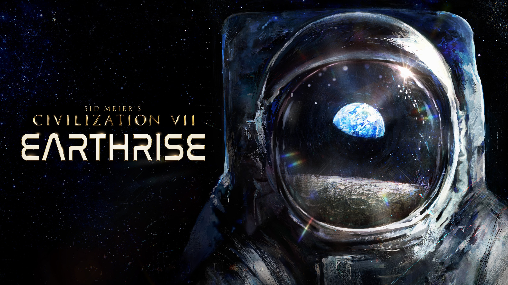
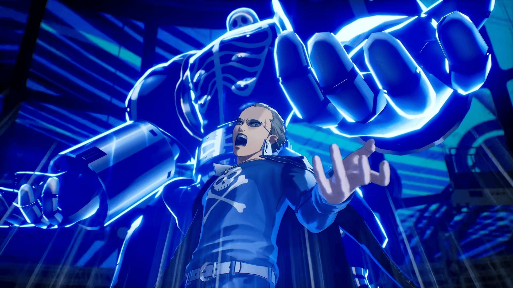
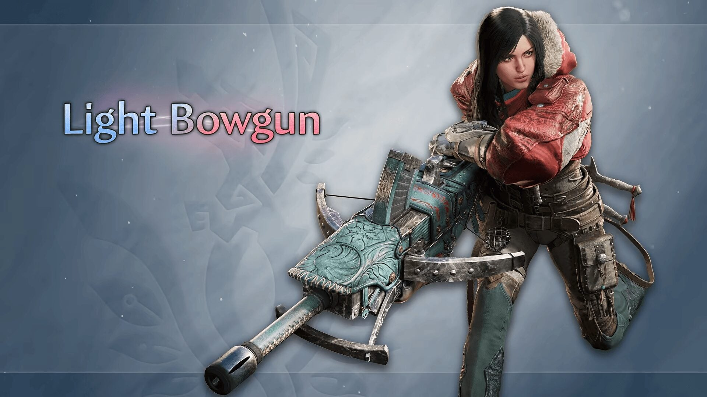

🔥🔥
幻珠奇港今日发售
阿拉伯半岛采珠风独立 Roguelite：PS5 / Steam / Epic，Steam 简中名「幻珠奇港」。
- 日期
- 2026-09-07（店页当日；截稿仍 coming_soon）
- 主体
- Red Dunes · Agate · Steam 2998920
- 库
- 行业 · 独立发售
今日主线是行业翻牌：独立作 幻珠奇港（Port of Jumanah） PS5 / PC 定档今日发售；另补入昨窗漏扫的 《文明VII》Arc of Tomorrow / Earthrise 路线图，以及卡普空 Ascendance 轻弩增威片与 《女神异闻录4 Revival》巽完二 角色预告。今日无新旗舰；今日无新 MCP/Skill 推荐。
coming_soon，店页日期为今日。判定：行业发售日 + 补核日。不复述 Thank You Bus Driver、Astonishia、MH 锤片、鬼武者、Astra/Gemini/Fable、AWS/Baseten MCP、SoP 片单、夜勤人2。
阿拉伯半岛采珠风独立 Roguelite：PS5 / Steam / Epic，Steam 简中名「幻珠奇港」。
35 周年路线图：免费原子时代大更 + 太空主题首个付费扩展；本月 1.5.0。
卡普空扩展 2027 档跟进；轻弩跑打 / 枪斗反击 / 弹雨。
ATLUS 放出《女神异闻录4 Revival》巽完二介绍片；2027-02-18 多端 + Game Pass。
独立发售 1 + 更新/扩展 1 + 资料片跟进 1 + 角色预告 1；有独立游戏观察新增；无新展会片单。
AI / 二次元 / 游戏开发空库未出 Tab。
行业主轴是独立作幻珠奇港今日发售翻牌，外加 Civ VII 路线图补核、Ascendance 轻弩片与 P4R 巽完二预告。今日有独立游戏观察新增。展会片单无新世界首发 / 无新锁（不预写 Direct）。
判定：发售日 + 补核日；独立轴有新增。
Red Dunes Games 与 Agate 的阿拉伯半岛采珠风 2.5D Roguelite 动作作，店页锁 2026-09-07 登陆 PlayStation 5 与 PC（Steam / Epic）。

来源：Steam 店页（简中名） · Gematsu · PS Store
Firaxis / 2K 在文明系列 35 周年节点公布下阶段：免费大更「Arc of Tomorrow」（原子时代）与首个付费扩展「Earthrise」（太空竞赛主题）；本月还有更新 1.5.0。

ATLUS 公开 P4R 角色介绍片，聚焦传说中的不良少年巽完二；作品锁定 2027-02-18，PS5 / Xbox Series / PC，并同步 Game Pass。

卡普空继续放出大型扩展 Ascendance（2027）武器 Boosted Actions 系列片，本条为轻弩：跑打、枪斗反击、弹雨。

来源：Capcom 官方预告（EN） · 日文版 · Gematsu
今日无已播官方秀。Zelda 40th Anniversary Direct（9/8 22:00 CST）与 Nintendo Direct（9/9 22:00 CST）未播，不预写片单。